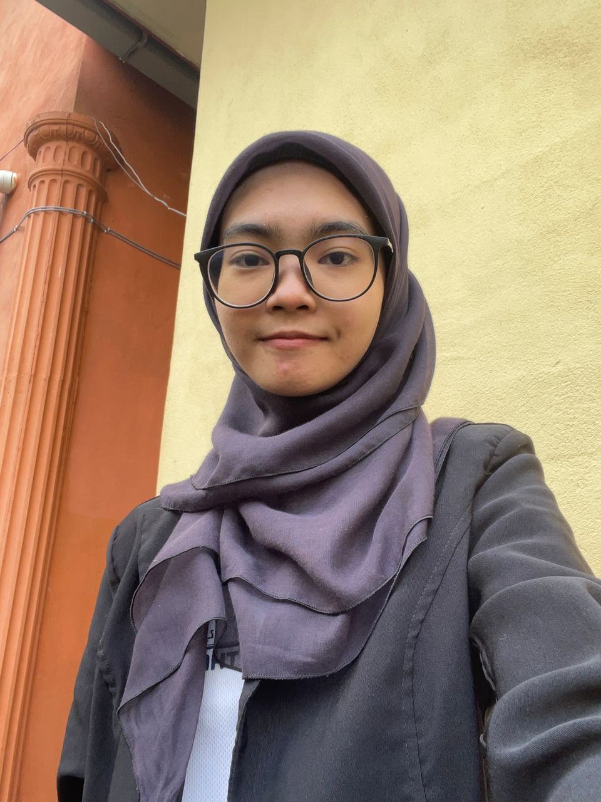

biodata
Home
Biodata
Experience and skill
Academic qualification
Contact me

Name:
Qistina Ayuni Binti Rosdi
Birth Date:
4 April 2003
Address:
Kampung Bukit Putera, Chalok, Permaisuri, Terengganu Darul Iman, Malaysia
Email:
qistinaayuni01@gmail.com
Phone:
011-17596772